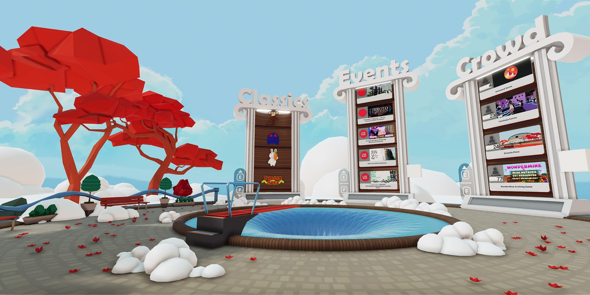
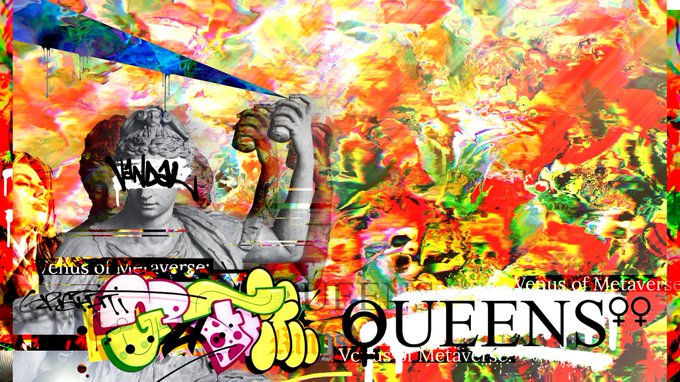

<!DOCTYPE html>
<html>
</html>
<head>
  <meta charset="utf-8">
  <meta http-equiv="X-UA-Compatible" content="IE=edge">
  <title>Luca Arnaboldi - Researcher</title>
  <meta name="description" content="">
  <meta name="viewport" content="width=device-width, initial-scale=1">
  <meta name="robots" content="all,follow">
  <!-- Bootstrap CSS-->
  <link rel="stylesheet" href="vendor/bootstrap/css/bootstrap.min.css">
  <!-- Font Awesome CSS-->
  <link rel="stylesheet" href="vendor/font-awesome/css/font-awesome.min.css">
  <!-- Google fonts - Roboto-->
  <link rel="stylesheet" href="https://fonts.googleapis.com/css?family=Roboto:400,300,700,400italic">
  <!-- owl carousel-->
  <link rel="stylesheet" href="vendor/owl.carousel/assets/owl.carousel.css">
  <link rel="stylesheet" href="vendor/owl.carousel/assets/owl.theme.default.css">
    <link href="vendor/academicons-1.9.1/css/academicons.min.css" rel="stylesheet">
  <!-- theme stylesheet-->
  <link rel="stylesheet" href="css/style.green.css" id="theme-stylesheet">
  <!-- Custom stylesheet - for your changes-->
<!--    <link rel="stylesheet" href="css/styles.css">-->
  <!-- Favicon-->
  <link rel="shortcut icon" href="img/favicon.png">
  <!-- Tweaks for older IEs--><!--[if lt IE 9]>
    <script src="https://oss.maxcdn.com/html5shiv/3.7.3/html5shiv.min.js"></script>
    <script src="https://oss.maxcdn.com/respond/1.4.2/respond.min.js"></script><![endif]-->
</head>
<body>
  <div id="all">
    <div class="container-fluid">
      <div class="row row-offcanvas row-offcanvas-left"> 
           <!--   *** SIDEBAR ***-->
        <div id="sidebar" class="col-md-4 col-lg-3 sidebar-offcanvas">
          <div class="sidebar-content">
            <h1 class="sidebar-heading"> <a href="index.html">Luca Arnaboldi</a></h1>
            <p class="sidebar-p">I am a AI and Security researcher currently working as an Assistant Professor at the University of Birmingham </p>
            <p class="sidebar-p"> </p>
            <ul class="sidebar-menu">
                <!-- Link-->
                <li class="sidebar-item"><a href="index.html" class="sidebar-link">Home</a></li>
                <!-- Link-->
                <li class="sidebar-item"><a href="research.html" class="sidebar-link">Research</a></li>
                <li class="sidebar-item"><a href="teaching.html" class="sidebar-link">Teaching</a></li>
                <li class="sidebar-item"><a href="projects.html" class="sidebar-link">Student Projects</a></li>

                <!-- Link-->
                <li class="sidebar-item"><a href="news.html" class="sidebar-link">News</a></li>
                <!-- Link-->
                <li class="sidebar-item"><a href="blog.html" class="sidebar-link active">Blogs</a></li>
            </ul>

            <p class="social">
                 <a href="https://scholar.google.co.uk/citations?user=2_72l3QAAAAJ&hl=en" target="_blank" class="social-btn"><i class="ai ai-google-scholar"></i></a><!-- dribble -->
                  <a href="https://twitter.com/luca_arnaboldi" target="_blank" class="social-btn"><i class="fa fa-twitter"></i></a><!-- twitter -->
                  <a href="https://www.researchgate.net/profile/Luca_Arnaboldi" target="_blank" class="social-btn"><i class="ai ai-researchgate"></i></a><!-- twitter -->
                  <a href="https://uk.linkedin.com/in/luca-arnaboldi-829083b2" target="_blank" class="social-btn"><i class="fa fa-linkedin"></i></a><!-- twitter -->
                  <a href="Curriculum_Vitae.pdf" target="_blank" class="social-btn">CV</a><!-- twitter -->
            </p>
            <div class="copyright text-center text-md-left">
              <p class="credit">&copy;2024 Luca Arnaboldi | Template adapted from <a href="http://bootstrapious.com/portfolio-themes" class="external">Bootstrapious</a></p>
              <!-- Please do not remove the backlink to us, unless you support the development at http://bootstrapious.com/donate. It is part of the license conditions. Thanks for understanding :)        -->
            </div>
          </div>
        </div>
        <!--   *** SIDEBAR END ***  -->
        <!--   *** DETAIL ***-->
        <div class="col-md-8 col-lg-9 content-column white-background">
          <div class="small-navbar d-flex d-md-none">
            <button type="button" data-toggle="offcanvas" class="btn btn-outline-primary"> <i class="fa fa-align-left mr-2"></i>Menu</button>

          </div>
          <div class="row">
            <div class="col-xl-10">
              <div class="content-column-content">
                <h1>A Tour of Decentraland me</h1>
                <h2 >The Virtual Reality World Built on The Blockchain</h3>
                <p >During my student days, I discovered that staying up late is rarely worth it – a lesson familiar to many who find themselves struggling to keep their eyes open during their 9am zoom meetings. Against this ‘common logic’ and feeling some kind of nostalgia to my PhD years, the time now reads 12:30 am, and I find myself situated in a large plaza, exchanging pleasantries and emoting with two lawyers who work on AI ethics, and our friendly guide for the evening, ‘Zeb’ (a cryptocurrency enthusiast, and founder of <a href='https://www.facebook.com/Altcoin-Radio-103586285094552/'>altcoin radio</a>), who is adorned with an impressive amount of exclusive cosmetic bling.</p>
                <p>You would be forgiven for thinking that this late-night outing was occurring in the so-called ‘real world’, but as a computer science security researcher, we also get a reputation for believing that going outside is highly overrated. So here I am, sat at my laptop and waiting for my tour to start. I feel unsure of what to expect, but the words of Stephen Lang in the Avatar movie cross my mind.</p>  <blockquote class="blockquote">You are not in Kansas anymore. You are on Decentraland, ladies and gentlemen. Never forget that.</blockquote>
                <p>Decentraland promises a fully decentralised world <a href='https://decentraland.org/'>completely in the control of its users</a>. Although this sounds promising it is unclear what this could mean. However, I cannot help but feel a rush of excitement about the endless possibilities presented by a virtual society with its own users voting on laws enforced with smart contracts.</p>
                <p>Decentraland is a Decentralised Autonomous Organisation (DOA). A DOA is an organisation whose rules are dictated by computer programs, known as smart contracts, which are enforced using the blockchain. This allows for complete transparency and accountability, something not easily attainable in more traditional organisations [article on bad big corpo]. What is even more powerful is that its members get voting rights and are able to influence decisions and shape the world around them in a purely democratic fashion. The virtual world built by the Decentraland community allows users to create an avatar, buy land, and become part of this organisation, through a cryptocurrency called <a href='https://www.kraken.com/en-gb/learn/what-is-decentraland-mana'>Mana<a/>.</p>

                <figure>
                    <br>
                    <figcaption class="center-image">Genesis Plaza - Decentraland</figcaption>
                </figure>

                <p>Like in the real world, art garners large profits, authenticity is ensured through the blockchain and a concept known as non-fungible token (NFT). Through this mechanism a unique data point is created on the blockchain ensuring authenticity. Like an artist's signature, although much easier to authenticate, this token ensures you are the true owner of the original piece and adds prestige as well as value. As I browse the art district, we enter a museum displaying several works of various independent artists, all for sale through mana. Artists can use this mechanism to sell their art in a way previously thought unimaginable, something that has potential to completely revolutionize this market space and that could empower the future generation of artists. If this is not enough, on April 3rd a huge event was held, <a href='https://cryptobriefing.com/pussy-riot-talk-nfts-ahead-major-graffiti-queens-expo/%5D'>displaying work from 200 artists</a> , featuring activist band <a href ='https://en.wikipedia.org/wiki/Pussy_Riot'> Pussy Riot </a>, raising money for women's shelters and other charitable causes.</p>

                <figure>
                    <br>
                    <figcaption class="center-image">Poster for graffiti queens NFT art expo</figcaption>
                </figure>


                <p>However incredible this world is, it is far from isolated from reality and real-world implications. Just two weeks ago, the state of Wyoming officially passed a bill recognizing <a href = 'https://decrypt.co/60883/wyoming-bill-granting-crypto-daos-legality-nears-approval'> DOAs as legal organisations </a>. Joining Malta as the second place on earth to make these decisions, this newfound legitimacy has huge societal implications. A potential for a fully recognized organisation ruled by its users, able to employ people, pass policies in a democratic manner and influence society from its virtual haven.</p>
                <p>Standing at the end of the tour, watching movie clips in a cinema, we start to ponder about the ethical implications of such a world. If it is decentralised, and laws are enforced through smart contracts how can we assure they are correct, and what are the greater implications in the real world: how are copyrights enforced? Who gets sued? What assurance do we have that our investments are secure? What is the cyber security of such technology?</p>
                <p>All these questions are left unanswered, but before me I see a world developing as an independent ecosystem, where charitable events can be hosted and where artists can showcase their work and make a living. Decentraland is a world whose limit of expansion is only our imagination and I cannot help but think I have stumbled onto something truly revolutionary.</p>


  <!-- JavaScript files-->
  <script src="vendor/jquery/jquery.min.js"></script>
  <script src="vendor/popper.js/umd/popper.min.js"> </script>
  <script src="vendor/bootstrap/js/bootstrap.min.js"></script>
  <script src="vendor/jquery.cookie/jquery.cookie.js"> </script>
  <script src="vendor/owl.carousel/owl.carousel.min.js"></script>
  <script src="vendor/masonry-layout/masonry.pkgd.min.js"></script>
  <script src="js/front.js"></script>
</body>
